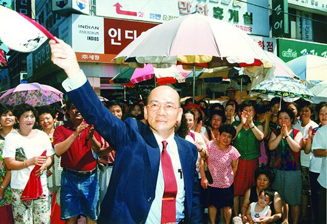
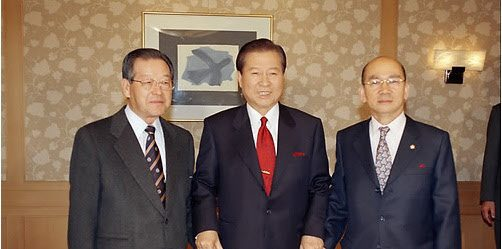
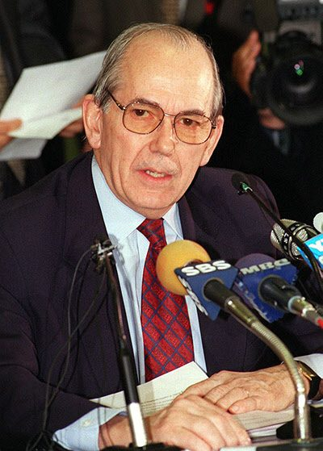

보도일 2015-06-09출처 조선일보 프리미엄조선 연재
1997년 초여름, 박태준은 4년여 해외 유랑생활을 접고 포항으로 돌아왔다. 정치적인 상처를 입고 조국을 등져야 했던 그는 어느덧 일흔 살을 헤아렸다. 그러나 5년 전 박정희의 유택 앞에서 다짐했듯이 ‘잘사는 나라 건설에 매진’할 각오를 다지고 있었다. 그때 한국경제는 엉망으로 꼬이는 중이었다. 그러나 아직 박태준에겐 힘이 없었다. 그가 마지막으로 나라를 위해 헌신할 힘을 어디서 구할 것인가? 마치 박태준을 내쫓은 김영삼이 그를 기다려온 것처럼, 때마침 김영삼이 포항에다 그에게 기회를 열어주었다.
대통령 김영삼의 이른바 ‘역사 바로 세우기’에 의해 옥중출마로 당선한 국회의원 허화평(포항시 북구)이 대법원 확정 판결에 의해 의원직을 상실함으로써 그 빈자리에 생겨난 보궐선거. 박태준은 출마를 결심했다.
박태준의 인생을 통틀어 자신이 직접 후보로 나선 최초의 선거. 날짜는 7월 24일로 정해졌다. 칠순 나이에는 더위가 체력적인 부담이었다. 하지만 그는 건재했다. 청년시절부터 12년간 군대에서 다져놓은 다부진 기초체력이 있고, 영일만 포철 현장의 구석구석을 누비고 다닌 시절에 단련한 근육과 튼튼한 뼈, 무엇보다 자신과의 투쟁에서 패배하지 않을 자존심이 여전히 심장처럼 뛰고 있었다.
무소속 후보 박태준. 여당(신한국당) 후보가 있어도 선거운동의 양상은 이내 민주당 이기택 후보와 무소속 박태준 후보의 양자대결로 형성되었다. 포항이 고향, ‘꼬마 민주당’ 대표, 7선 관록. 이들을 결합한 이기택의 기세도 만만찮았으나 박태준은 몸소 등장하지 않는 후보와의 대결도 상정하고 싶었다. 현 청와대 주인과의 간접 대결이 그것이었다. 직접 대결은 이기택이지만 자신의 인생과 국가적 차원에서는 대통령 김영삼을 의식하지 않을 수 없었다. 그래서 그는 청와대 앞에서 일인시위를 벌이는 것 같은 메인 슬로건을 내걸었다.
“‘겡제’는 가라, ‘경제’가 왔다!”

박태준은 조그만 유세차에 올라 줄기차게 외쳤다.
“김영삼 대통령은 ‘경제’를 ‘겡제’라고 발음합니다. 그래서 오늘의 한국정부에서 ‘경제’는 사라지고 ‘겡제’만 설치고 있습니다. 여러분, ‘겡제’가 ‘경제’를 살릴 수 있겠습니까? 결코 없습니다. 무너져 내리고 있는 한국경제를 살리기 위해 하루빨리 ‘경제’는 ‘경제’에게 맡기고 ‘겡제’는 떠나야만 합니다. ‘겡제’는 가라, ‘경제’가 왔다!”
‘겡제’란 김영삼을 가리키고 ‘경제’란 박태준을 가리키는 말이라는 것을 모르는 시민은 없었다. 머잖아 터지는 ‘IMF사태’를 김영삼의 ‘겡제’라고 한다면, 포철 신화의 주인공, 실물경제의 대가, 한국 산업화의 영웅, 세계의 철강왕, 그리고 그들의 혼연일체가 박태준의 ‘경제’였다. 그는 그러한 자신의 거대 이미지를 불식하기 위해 더위를 이겨내며 부지런히 시민 속으로 들어갔다.
박태준 후보의 개인연설회. 포항역 광장에 운집한 시민들 앞에는 전혀 뜻밖의 연사가 나타났다. 마흔 살의 박지만, 박정희 대통령의 외아들. 시민들은 박정희 대통령의 혼령이 박태준을 돕기 위해 홀연 등장한 것 같은 착각을 일으켰다. 사회자가 연단에 오른 박지만을 소개했다. 우레 같은 박수를 받은 박지만이 연단 옆으로 나와 허리를 굽히고 마이크 앞에 섰다. 군중은 찬물을 끼얹은 듯 잠잠했다. 박지만은 한마디 말이 없었다.
물론 인사말도 없었다. 잠시 마이크 앞에 서 있다, 말없이 그대로, 곧 연단을 내려갔다. 그러나 그것은 열변이었다. 침묵의 열변이었다.
보궐선거는 박태준의 압승으로 끝났다. 이제 그는 시민의 힘으로 국가의 일을 맡으러 나갈 기본준비를 갖추었다. 그해 12월은 대통령선거. 박태준은 누구와 연대할 것인가? 그의 주변은 보수파 일색이었다. 그러나 그는 말했다.
“산업화세력과 민주화세력의 화해, 영남과 호남의 화합은 우리 시대의 절박한 요청입니다. 시대정신입니다.”
김대중과 연대하겠다는 선언과 마찬가지였다. 그것은 명분이자 현실이었다. 국가경제의 일대 위기가 닥쳐오는 상황을 정확히 예견하고 있는 박태준, 그는 대립과 갈등을 화해와 화합으로 바꾸는 국가적이고 국민적인 결단이 필요하다는 것을 내다보고 있었다. 김영삼의 밑으로는 들어갈 수 없고 들어가지도 않을 박태준, 그는 김영삼에게 등 돌리는 시늉을 했으나 그의 사람들과 선거운동을 해야 하는 이회창 후보와 손을 잡을 수 없었다.

김대중과 김종필, 자민련 총재를 맡은 박태준. 이들의 연대를 DJP라 불렀다. 박태준을 존중하여 DJT라 부르는 이들도 있었다. 박태준은 김종필에 견줄 만한 정치적 영향력을 가진 정치인이 아니었다. 그러나 정치 9단과 어깨를 겨룰 경제 9단이었다.
김대중과 이회창의 대결이 박빙의 승부로 이어지는 가운데 12월 3일 국제통화기금(IMF) 총재 미쉘 캉드쉬가 김포국제공항에 내렸다. 박태준이 예견한 ‘코쟁이’의 출현이었다. 그는 1997년 늦여름부터 말해오고 있었다. “이대로 가면 태평양전쟁 종전 직후 맥아더 장군이 동경만 함상에서 일본 접수를 선언했던 것처럼, 어느 날 갑자기 코쟁이 하나가 김포공항에 내려서 한국경제 접수를 선언할 것”이라고.
그의 예견이 적중한 그것을 평범한 한국 시민은 그냥 ‘아이엠프사태’라 부르고 똑똑한 이들은 ‘외환위기사태’라 불렀다. 6·25전쟁 이후의 최대 국난, 정축국치(丁丑國恥)라며 가슴을 치는 언론인과 지식인도 많았다.
